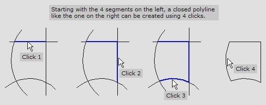

Operations
Join
This tool is used to trim and join several separate polylines into one. Select this mode, and click on the pieces of the polyline to be connected and retained. The locations where you click on the polylines determines which section of the polyline is trimmed away and which are kept. Here is an example that shows a closed polyline being constructed from four separate segments.

Here is another possible Join of the same four segments. In this case, since the four segments don’t form a closed shape, does not add this polyline into the drawing yet. To add the polyline into the drawing, and to start afresh, hold down the Ctrl key and click.
If you click on segments that don’t touch, they will be extended to touch, and then joined up together, if possible. Here’s an example:
Undo
If you hold down the Shift key while clicking, the most recent segment that was joined will be undone, and you can choose to join a different segment to the polyline instead.
Auto join mode
The Auto join mode is used to automatically join up multiple line or arc segments in the drawing. To use this mode, enter a threshold value, and click while holding down the Alt key. examines every pair of open end-points, and if they are closer than the specified threshold value, the ends get connected up (by either extending or trimming the segments until they touch).
Created with the Personal Edition of HelpNDoc: Create cross-platform Qt Help files
Offset
Offset
The Offset tool is used to make a copy of an polyline, with each of its segments offset so it lies parallel to the original. You can enter the distance by which each segment should be offset, or specify a point through which the offset polyline should pass, and will automatically compute the offset distance.
If the offset is in the wrong direction, undo the operation, enter the negative offset distance and press Enter to offset the polyline the other way.
Retaining the original polyline
Normally, the original polyline is replaced by the offset polyline. However, if you wish to retain the original polyline, hold down the Ctrl key while clicking to indicate the offset through point (or while clicking Enter).
Offsetting only a single segment
Holding down the Shift key while clicking on the offset through point (or while pressing Enter) causes only the selected segment to be offset, while the rest of the polyline is unchanged.
The Offset Edge command offers another way of offsetting a single edge, and provides more control over this operation.
Created with the Personal Edition of HelpNDoc: Single source CHM, PDF, DOC and HTML Help creation
Common Shape
Common Shape
This dialogue is used to parametrically create one of several common shapes and insert them into the drawing. When you click on this button, the common shape construction dialogue shown alongside appears. In the top pane of this dialogue, you can choose from the palette of common shapes listed. When you choose a shape, a descriptive picture of the shape is displayed, and you can type in values into the parameter boxes.
In addition to creating a single shape, this tool can also create arrays of common shapes, laid out in different patterns such as BHC, LAA, GRD etc. The bottom pane lets you choose one of these patterns and to input its parameters. After choosing a shape and a pattern, and entering parameters for both of them, the common shape can be created by clicking at the desired insertion point in the drawing.
Created with the Personal Edition of HelpNDoc: Generate EPub eBooks with ease
Move
Move
You can use this tool to move selected objects through a precise distance. The distance to move can be typed into the DX and DY input boxes, and when you press Enter, all selected objects move through this distance. If you also hold down Ctrl key when you press Enter, a copy is made, and the objects at the original positions are undisturbed.
You can also define the distance to be moved by clicking twice with the mouse. Objects are moved by the vector between the first and second mouse clicks. For example, if you click at the points (20, 10) and (24, 16), selected objects are moved 4 units to the right, and 6 units to the top.
Redefining the selection set
As the prompt indicates, you can redefine the selection set of objects without getting out of this mode, by holding down the Ctrl key and clicking on an object you want to select. Like in the Pick mode, the Shift key must be held down if you want to select further objects without deselecting the ones you have already selected, and clicking on an empty area of the drawing allows you to select objects by enclosing them in a selection rectangle. After the selection is done, you can continue with the Move/Copy operation by clicking without holding down the Ctrl key. This mechanism of selecting objects without having to revert back to Pick mode works in several other modes, such as Rotate, Scale, Mirror, Rectangular Array, and Circular Array.
Moving part of a polyline
If any polylines are partially selected, the move command moves only the selected segments. Here’s an example:
Stretching polylines
If any polylines are partially selected, and you hold down the Shift key while starting the move operation, the partially selected polylines are stretched. The selected nodes move, while the unselected nodes remain in place.
Created with the Personal Edition of HelpNDoc: Free iPhone documentation generator
Rotate
Rotate
The Rotate tool is used to rotate the selected entities. Any point can be used as the centre of rotation by either clicking on it, or typing it into the X and Y input boxes, and you can rotate entities through precise angles by typing in the rotation angle into the Angle input box. If you want to enter the rotation angle using the mouse, you do it by clicking on two points. The angle these two points form at the centre of rotation is used as the rotation angle. Here’s an example.
Redefining the selection set
Holding down the Ctrl key during the first click of the Rotate command has the effect of redefining the selection set, while the Ctrl key during the last click acts as a modifier, causing a rotated copy to be made, leaving the original intact. The prompt bar at the top of the drawing window changes to indicate the meaning of the Ctrl key in the current context.
Created with the Personal Edition of HelpNDoc: Easy EBook and documentation generator
Scale
Scale
Using the Scale tool, you can make selected objects larger or smaller. The shape of the object is preserved, since the same scaling is used on both the X and Y axes. As with the rotation tool, you can designate any point as the centre of scaling; the selected entities scale up or down about this point. You can enter the scale factor by typing it into the Factor input box. Scale factors lesser than 1 diminish the entities, while scale factors greater than 1 enlarge it. You can also input the scaling factor using two mouse clicks. Suppose the distance between the centre of scaling and the first mouse click is d1, and the distance between the centre of scaling and second mouse click is d2, the scaling factor is computed as d2 / d1. The example below illustrates how to use a mouse to input scaling factors. In this example, we want to scale the triangle so that its base fits precisely on top of the rectangle.
Redefining the selection set
As with the Move/Copy tool, you can use the Ctrl key during the initial phase to modify the selection set. During the final phase, the Ctrl key is used to indicate that you want to make a scaled copy, leaving the originals intact.
Created with the Personal Edition of HelpNDoc: Free EPub producer
Mirror
Mirror
The Mirror tool is used to make mirror images of selected entities, about any arbitrary reflection line. Two mouse clicks define the mirror line, and construction lines assist in setting up horizontal or vertical mirror lines, which are the most frequently used. The example below shows an entity being mirrored about various lines.
Redefining the selection set
As with the Move/Copy tool, you can use the Ctrl key during the initial phase to modify the selection set. During the final phase, the Ctrl key is used to indicate that you want to make a copy of the reflected entities, leaving the originals intact.